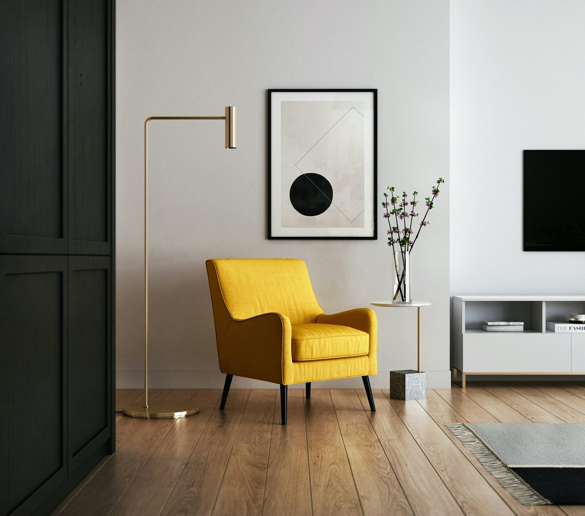

2026년 6월 4일부터 7일까지, 제10회 부산 건축박람회가 약 300개 업체와 3,000여 개 아이템으로 BEXCO를 채웠다. 한국의 건축 담론은 대개 서울을 중심으로 돌지만, 자재 시장은 실제로 이런 행사를 통해 움직인다 — 지방에서, 직접 만지면서, 시공자 주도로. 부스 조명을 걷어내고 보면 부산은 하반기 수요가 어디로 향하는지를 꽤 정직하게 보여준다.
300개 업체, 3,000개 아이템 — 무엇이 모였나
박람회는 익숙한 블록으로 짜였다 — 건축자재전, 인테리어전, 전원주택전, 조명·조경산업전, 냉·난방기자재전, 주택자동화전, 보안 및 방범기자재전, 그리고 건축정보전. 올해는 두 개의 특별관이 눈에 띄었다. 차양·창호 산업특별관과 바닥재·타일 특별관이다. 이 구성 자체가 신호다. 주최 측이 창호·차양·바닥재·타일에 별도 전시관을 떼어준다는 것은, 그 품목이 바이어가 가장 오래 비교하고 가장 큰돈을 들여 결정하는 영역이라는 뜻이다.

현장에서 읽힌 두 흐름
시공자의 시점에서 보면 현장은 두 가지 이야기를 동시에 들려줬다. 첫째는 가성비 자재의 강세다. 2026년 3월 건설공사비지수는 134.4로 전년 동월 대비 2.5% 올랐고, 4월 체감경기 조사에서는 자재 수급과 자금 조달 부담에 눌려 건설업체가 다시 움츠러든 모습이 나타났다. 예산이 빡빡해지면 사람이 몰리는 부스는 가장 비싼 곳이 아니다 — 같은 성능을 더 싸게 약속하는 곳이다. 가성비 바닥재·창호·마감재 앞에서 실제 흥정이 벌어졌다.
둘째 흐름은 전원주택·리모델링 부문의 꾸준한 견인력이다. 냉·난방과 주택자동화 옆에 자리 잡은 전원주택 전용관은, 고층 건물을 올리는 게 아니라 단독주택을 짓거나 고치려는 — 그리고 그 공급망 전체를 한나절에 둘러보고 싶어 하는 — 바이어를 가리킨다. 시공자에게 이쪽이 더 질긴 수요다. 신규 고층 착공은 금리에 따라 얼어붙을 수 있지만, 새는 지붕과 낡은 창, 차가운 바닥은 경기와 무관하게 고쳐야 하기 때문이다.
"빡빡한 해일수록 붐비는 부스는 가장 비싼 곳이 아니다. 같은 성능을 더 싸게 약속하고, 만질 수 있는 샘플로 그걸 증명하는 곳이다."
소비자가 박람회에서 챙겨야 할 것
아파트를 고치거나 작은 집을 지으려는 일반 방문객에게 3,000개 아이템은 소음처럼 느껴질 수 있다. 요령은 박람회를 쇼핑몰이 아니라 비교 엔진으로 다루는 것이다. 같은 품목을 서너 개 부스에서 연달아 만져보라. 바닥재에 손을 대보고, 창을 직접 여닫아 보고, 같은 면적 기준으로 각 업체에 견적서를 받아라. 브로슈어가 숨기는 차이는 샘플을 나란히 놓는 순간 드러난다. 그리고 사양표와 가격을 함께 사진으로 남겨라. 부스에서 부른 그 숫자가, 일주일 뒤 전화했을 때 가장 먼저 사라지는 숫자이기 때문이다.

편집장 코멘트
부산은 자재 시장이 서울 보도자료 안에만 사는 게 아니라는 사실을 일깨운다. 지방 박람회는 가성비·리모델링 수요가 조용히 실제 가격의 바닥을 결정하는 곳이다. ARCHINODE 입장에서 핵심은 채널 전략이다. 프리미엄·수입 브랜드는 서울 쇼룸에서 주목을 얻지만, 한국 수요의 넓은 저변 — 전원주택, 리모델링, 비용에 민감한 시공자 — 은 지방 박람회와 그곳에서 가능한 직접 비교를 통해 닿는다. 그 바이어 앞에 만질 수 있는 샘플과 정직한 견적서를 내놓을 수 있는 브랜드는 이미 부스의 절반을 이긴 셈이다.